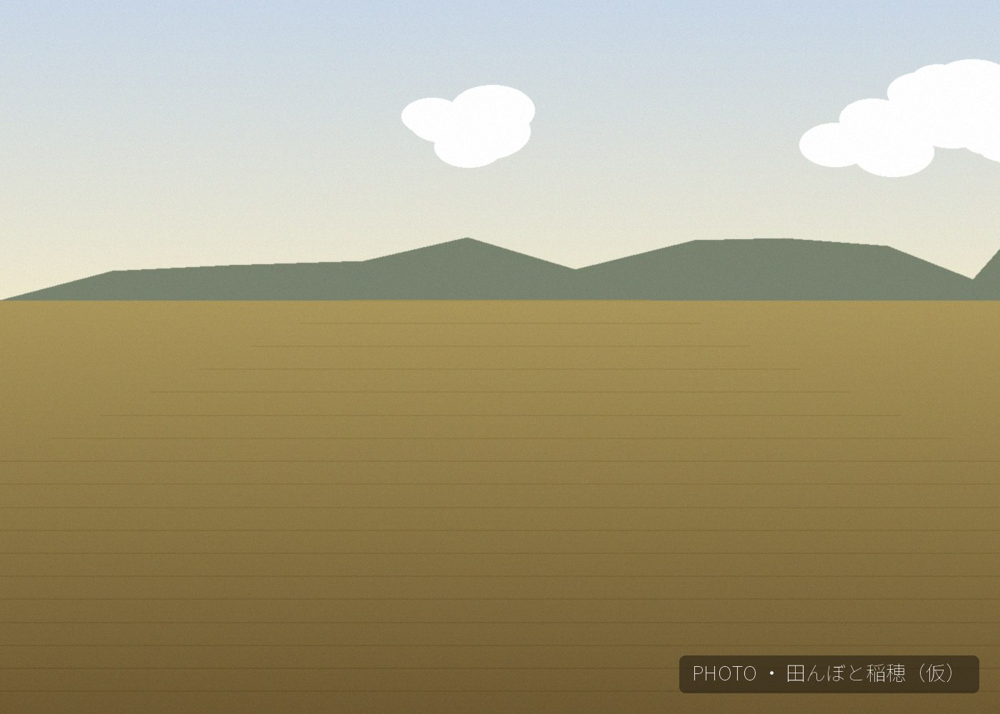

ホーム ／ ニュース
2026年産 新米の予約受付を開始しました。ヒノヒカリ・コノホシともにオンラインストア（STORES）にてご予約いただけます。
コノホシの精米が完了し、オンラインストアに入荷しました。数量限定となりますので、お早めにご注文ください。
公式ウェブサイトをリニューアルしました。今後とも田結いをよろしくお願いいたします。
今年も特A地区の田植えが始まりました。ヒノヒカリ・コノホシともに順調に生育しています。
オンラインストア（STORES）をオープンしました。